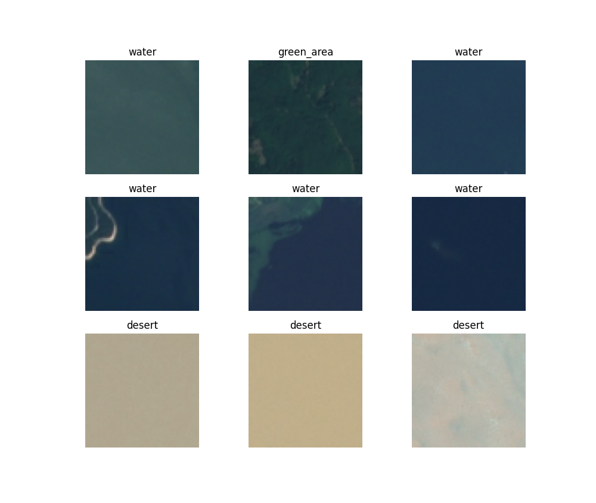
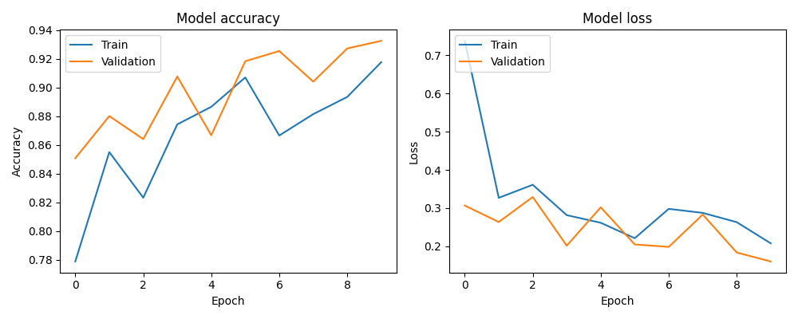

Introduction
Satellite imagery has a wide variety of uses, including agriculture, cartography, conservation, and climate studies. For example, in terms of agriculture, classifying satellite imagery is potentially useful for detecting plant diseases, soil conditions, and crop health.
In this blog, we will look at how to build a machine learning model for classifying satellite imagery.
Imports
First, we set up our necessary imports:
import numpy as np
import matplotlib.pyplot as plt
from tensorflow import keras
from tensorflow.keras import layers
from tensorflow.keras.preprocessing import image_dataset_from_directoryDataset Preparation
The dataset used in this blog is sourced from the “Satellite Image Classification” dataset(https://www.kaggle.com/datasets/mahmoudreda55/satellite-image-classification/data). The dataset structure should include subfolders for each class, containing images corresponding to that class. In our case, the classes are cloudy, desert, green area, and water.
Loading and Preprocessing the Data
We use the image_dataset_from_directory function provided by TensorFlow to load and preprocess the dataset. This function automatically labels the images based on the subfolder structure and splits the data into training and validation sets.
Here is the code for splitting for loading and splitting our datasets:
data_dir = "./data"
batch_size = 32
image_size = (64, 64)
train_dataset = image_dataset_from_directory(
data_dir,
validation_split=0.2,
subset="training",
seed=778,
image_size=image_size,
batch_size=batch_size,
)
validation_dataset = image_dataset_from_directory(
data_dir,
validation_split=0.2,
subset="validation",
seed=778,
image_size=image_size,
batch_size=batch_size,
)
class_names = train_dataset.class_namesExploring the Data
Visualizing the dataset provides valuable insights. In the code, we display a grid of sample images with their corresponding labels, allowing us to verify that the data is loaded correctly and gives us an idea of what our model will be working with.
We can do this with the following code:
plt.figure(figsize=(10, 10))
for images, labels in train_dataset.take(1):
for i in range(9):
ax = plt.subplot(3, 3, i + 1)
plt.imshow(images[i].numpy().astype("uint8"))
plt.title(class_names[labels[i]])
plt.axis("off")
plt.show()This gives us the following image:

Building the Convolutional Neural Network
The heart of the classification task lies in the CNN architecture. The provided code outlines a CNN model with multiple convolutional layers followed by max-pooling layers. Additionally, we’ve introduced more complexity with additional convolutional and dense layers, enhancing the model’s ability to learn intricate patterns in satellite images.
model = keras.Sequential([
layers.InputLayer(input_shape=(image_size[0], image_size[1], 3)),
# Convolutional layers
layers.Conv2D(32, kernel_size=(3, 3), activation="relu"),
layers.MaxPooling2D(pool_size=(2, 2)),
layers.Conv2D(64, kernel_size=(3, 3), activation="relu"),
layers.MaxPooling2D(pool_size=(2, 2)),
layers.Conv2D(128, kernel_size=(3, 3), activation="relu"),
layers.MaxPooling2D(pool_size=(2, 2)),
# Flatten before dense layers
layers.Flatten(),
# Dense layers
layers.Dense(256, activation="relu"),
layers.Dropout(0.5),
layers.Dense(128, activation="relu"),
# Output layer
layers.Dense(len(class_names), activation="softmax"),
])Compiling the Model
Before training, we compile the model by specifying the optimizer, loss function, and evaluation metric. In our example, we use the Adam optimizer and sparse categorical crossentropy loss, appropriate for multi-class classification tasks.
model.compile(
optimizer="adam",
loss="sparse_categorical_crossentropy",
metrics=["accuracy"]
)Training the Model
The model is trained using the fit function, iterating through the dataset for a specified number of epochs. We observe the training and validation accuracy and loss over epochs, monitoring the model’s learning progress.
epochs = 10
history = model.fit(
train_dataset,
validation_data=validation_dataset,
epochs=epochs
)Evaluating the Model
After training, we evaluate the model on the validation dataset to assess its performance. The provided code calculates and prints the accuracy achieved by the model on unseen data.
test_loss, test_acc = model.evaluate(validation_dataset, verbose=2)This gives us a final test accuracy of 93.25%, which is great for a machine learning model under any circumstances and due to the complexity of our CNN and the quality/amount of our data.
Training and Performance Visualization
Here is some code to visualize how our model improved over each consecutive epoch.
# Plot training history
plt.figure(figsize=(10, 4))
# Plot training & validation accuracy values
plt.subplot(1, 2, 1)
plt.plot(history.history['accuracy'])
plt.plot(history.history['val_accuracy'])
plt.title('Model accuracy')
plt.xlabel('Epoch')
plt.ylabel('Accuracy')
plt.legend(['Train', 'Validation'], loc='upper left')
# Plot training & validation loss values
plt.subplot(1, 2, 2)
plt.plot(history.history['loss'])
plt.plot(history.history['val_loss'])
plt.title('Model loss')
plt.xlabel('Epoch')
plt.ylabel('Loss')
plt.legend(['Train', 'Validation'], loc='upper left')
plt.tight_layout()
plt.show()This produces the graph below showing the accuracy and loss of our model on both the training and validation datasets.

Conclusion
Building a satellite image classifier involves careful data preparation, model architecture design, and training. The provided code serves as a starting point, but it might be necessary to experiment with different architectures, hyperparameters, and augmentations to improve the model’s accuracy. Satellite image classification has applications in a multitude of enviroments, making it an extremely powerful.